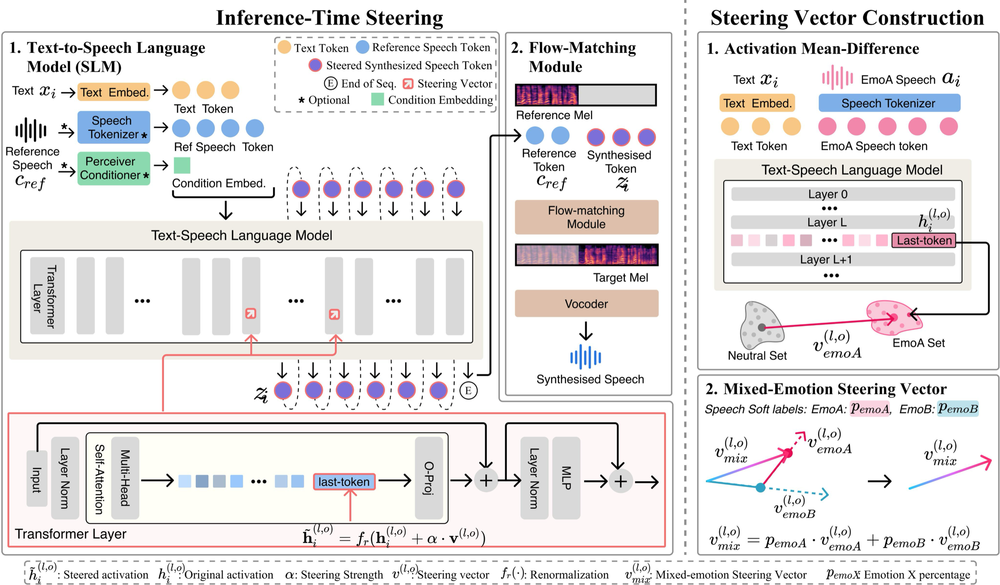

1. Where to steer?
We analyze modular emotional TTS systems and identify which modules, layers, and operators show the strongest emotion separability and steering potential.
1University of Melbourne 2Wuhan University 3HKUST(GZ) 4University of Auckland 5Monash University
Emotional expression in human speech is nuanced and compositional, often involving multiple, sometimes conflicting, affective cues that may diverge from linguistic content. In contrast, most expressive text-to-speech (TTS) systems enforce a single utterance-level emotion, collapsing affective diversity and suppressing mixed or text–emotion–misaligned expression. While activation steering via latent direction vectors offers a promising solution, it remains unclear whether emotion representations are linearly steerable in TTS, where steering should be applied within hybrid TTS architectures, and how such complex emotion behaviors should be evaluated. This paper presents the first systematic analysis of activation steering for emotional control in hybrid TTS models, introducing a quantitative, controllable steering framework, and multi-rater evaluation protocols that enable composable mixed-emotion synthesis and reliable text–emotion mismatch synthesis. Our results demonstrate, for the first time, that emotional prosody and expressive variability are primarily synthesized by the TTS language module instead of the flow-matching module, and also provide a lightweight steering approach for generating natural, human-like emotional speech.
Measure linear discriminability of different emotional speeches in the latent space of TTS models with linear probes.
Extract emotional steering vectors from discriminable latent representations with mean difference.
Mix multiple emotional steering vectors and scale them with alpha to control intensity.
Apply steering at inference time, with or without model-specific natural-language emotion instructions.

We analyze modular emotional TTS systems and identify which modules, layers, and operators show the strongest emotion separability and steering potential.
We extract steering vectors that support quantitative mixed-emotion synthesis and text-independent acoustic control, without retraining the backbone.
We introduce a multi-rater evaluation setup that measures mixed-emotion synthesis with richer human annotations instead of single-label judgments.